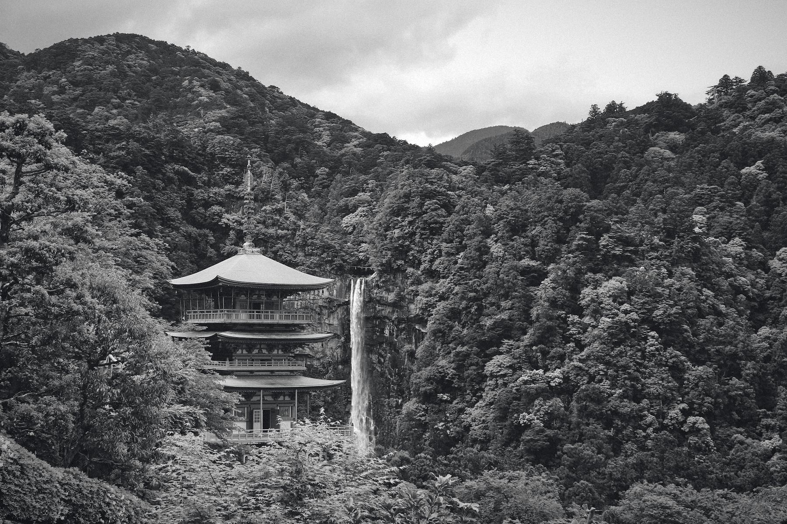

Seiganto-ji and the Nachi falls, Kumano. The founder's country, and the beginning of the line.
Nachi, Wakayama

師shi. A teacher; one who stands where the line passes through.
Arabella began training with Minoru Kanetsuka Sensei in 1988 and remained his student for thirty one years, until his death in 2019. She holds the grade of 5th Dan from the Aikikai Foundation, Hombu Dojo, Tokyo, and she teaches every class at Aikido West herself, which is rarer than it sounds.
Her teaching is his: precise, unhurried, and given to everyone in the room. She is a British Aikido Federation Level 2 coach and is professionally insured. She teaches every class herself and trains with every student in it.
1988Began under Kanetsuka Sensei
31 yearsHis student, to 2019
5th DanAikikai Hombu Dojo
Level 2BAF coach, professionally insured

Seiganto-ji and the Nachi falls, Kumano. The founder's country, and the beginning of the line.
Nachi, Wakayama
Born in 1939, Kanetsuka Sensei met Chiba Sensei in Kathmandu in 1972 and accepted his invitation to come to England to train. He never left. When Chiba Sensei returned to Japan in 1976, Kanetsuka Sensei succeeded him as Technical Director of the British Aikido Federation and became the Aikikai Hombu Dojo's representative in this country, a role he held for more than four decades.
His aikido was known for its precision and its refusal to hurry. He taught that technique is found in the quiet correction of posture rather than in force, and that a student should be able to train into old age. He died in 2019. Everything taught at Aikido West passes through him.

結びmusubi. A tying together, of one teacher to the next.
In traditional aikido, lineage is not decoration. It is the guarantee that what you are taught is the art as it was transmitted, not a reinterpretation.
Morihei Ueshiba founder of aikido, Tanabe, 1883 to 1969
Kazuo Chiba brought Aikikai aikido to Britain in 1966
Minoru Kanetsuka Technical Director of the BAF from 1976
Arabella Braun his student from 1988, Brook Green
Classes are two hours because the art needs the time. Beginners are partnered with senior grades from the first session, because that is how aikido has always been passed on. Grading follows the Aikikai syllabus, and the calendar of gradings is published for the year so that every member knows their next test date.
Senior grades take turns assisting on the mat. Teaching is part of training here, and it is the reason a small dojo can hold such a high standard.